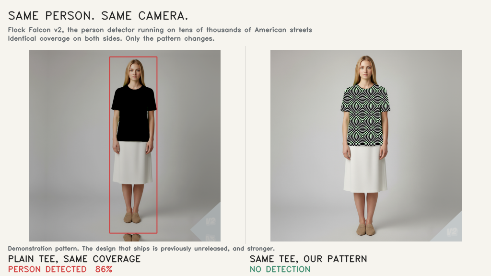

Executive Summary
8월 9일 라스베이거스에서 열린 데프콘 34에서 보안 연구자 빌 스웨어링겐이 2009년식 도요타 야리스를 자신이 만든 무늬로 감싸 무대에 올렸다. 번호판을 읽는 플록 카메라가 그 차를 잡아내지 못했다. 1년 동안 3,100만 번의 시행으로 다듬어 온 감시 카메라 회피 무늬다. 이 글이 따지는 것은 그 무늬가 통하느냐가 아니다. 통한다고 말할 때 늘 함께 붙어 다니는 숫자가 어느 세계에서 나온 것인지를 본다.
프로젝트가 공개한 최고 기록은 탐지기 하나에 대한 61.7% 미탐지율이다. 240번 시행 중 148번 잡히지 않았고 신뢰구간과 대조군 보정까지 붙어 있다. 그런데 그 숫자 옆에 프로젝트가 직접 적어 둔 단서가 있다. 디지털로 합성한 인쇄물, 시뮬레이션된 카메라, 모델 가중치를 이미 알고 들어간 화이트박스 공격. 실물 원단을 실제 카메라 앞에 세워 잰 기록이 아니라고 대시보드가 스스로 밝히고 있다.
조건을 적어 둔 쪽은 이만큼 성실한데, 그 조건은 보도와 공유를 거치며 대체로 떨어져 나간다. 같은 일이 공격하는 쪽에서만 벌어지지는 않는다. 우리가 만든 탐지 모델의 정확도 92%도 어느 세계에서 잰 숫자인지 똑같은 질문을 받아야 한다.
주요 수치
앞의 두 숫자는 프로젝트가 내세우는 규모와 성적이고, 뒤의 두 숫자는 그 성적을 어떻게 읽어야 하는지 알려 준다. 세 번째는 같은 탐지기를 두고 같은 프로젝트가 다른 페이지에 적어 둔 값이다. 마지막은 아직 아무도 재지 않은 수치다.
출처: 테크크런치 보도, 노레코그니션 연구 대시보드
3,100만
1년간 누적 시행 횟수
전부 디지털 시뮬레이션. 다음 목표로 50억 회를 제시했다
61.7%
최고 미탐지율
240회 중 148회. 실제 카메라에서 추출한 탐지기 f-YOLOv5 대상
100%
같은 탐지기, 첫 화면의 수치
프로젝트 소개 페이지 기준. 연구 페이지의 61.7%와 조건이 다르다
0건
실물 카메라로 잰 통계
실물 원단과 실제 카메라 검증은 나중 단계로 미뤄 뒀다고 명시
무늬는 사람이 아니라 알고리즘이 그렸다
노레코그니션이 만드는 것은 감시 카메라와 번호판 인식기, 안면인식 시스템이 사람이나 사물을 알아보는 단계를 방해하는 컴퓨터 생성 무늬다. 영상 녹화 자체를 막지는 않는다. 카메라는 그대로 찍되 무엇이 찍혔는지 판정하지 못하게 하는 쪽이다. 프로젝트를 이끄는 사람은 캔자스시티의 보안 전문가 빌 스웨어링겐으로, 해커 모임 SecKC를 함께 만들었고 대형 통신사의 정보보안 책임자와 국가안보국 계약업체의 레드팀 리더를 거쳤다.

옷으로 감시를 방해한다는 발상은 새롭지 않다. 프로젝트도 애덤 하비의 CV Dazzle과 Adversarial Fashion 같은 선행 작업을 직접 인용한다. 다른 점은 규모와 자동화다. 무늬를 자동으로 만들고 채점하는 퍼저가 대시보드 위에서 계속 돌고, 지난 1년 동안 약 3,100만 번의 시행이 쌓였다. 프로젝트는 다음 목표로 50억 회를 걸어 뒀다.
초기에는 손으로 무늬를 바꿔 가며 시험했다. 지금은 강화학습과 유전 알고리즘을 섞어 돌린다. 탐지기를 속이는 데 성공한 무늬가 살아남아 교배와 변이를 거치고 다음 세대를 만든다. 무작위 노이즈를 뿌리는 방식이 아니라 61종이 넘는 공격 기법 라이브러리를 조합한다. 기하학적 착시를 노리는 더즐 카모플라주, 글리치 아트와 픽셀 소팅, 주파수 영역을 흔드는 노이즈, 모델의 기울기를 직접 타고 들어가는 공격이 모두 들어 있다. 얼굴의 특정 지점만 겨냥하는 기법도 따로 있다.
시험대에 오르는 탐지기는 처음에 열 개였다. 사람을 찾는 탐지기 넷, 얼굴을 찾는 탐지기 넷, 얼굴을 식별하는 인식기 둘이다. 6월 25일에 열한 번째가 들어왔다. 실제로 설치돼 돌아가던 감시 카메라에서 뽑아낸 온디바이스 가중치를 그대로 쓰는 사람 탐지기이고, 프로젝트는 이것을 f-YOLOv5로 부른다. 테크크런치가 전한 탐지 알고리즘 11종을 모두 무력화했다는 문장이 가리키는 것이 이 열한 개의 시험대다.
시험 대상이 학술 벤치마크에 머물지 않는다는 점도 프로젝트가 앞세우는 대목이다. 테크크런치는 열한 개의 오픈소스 탐지 알고리즘과 함께 번호판을 읽는 플록, 경찰 보디캠을 만드는 액손, 안면인식 데이터베이스 클리어뷰 AI를 나란히 언급한다. 논문 속 모델이 아니라 지금 거리와 순찰차에 붙어 돌아가는 장비를 겨냥했다는 뜻이다. 다만 그 상용 시스템 각각을 몇 번 시험해 어떤 성적이 나왔는지는 공개된 대시보드 수치에서 따로 확인되지 않는다.
평가를 설계한 방식은 꽤 엄격하다. 무늬가 단순히 몸을 가려서 안 잡힌 것인지 무늬 자체가 효과를 낸 것인지 가르려고, 같은 면적을 검게 칠한 대조군의 성적을 빼고 보고한다. 학습에 쓰지 않은 인물로 검증하고, 가장 불리한 카메라 각도의 값을 적는다. 이 부분은 공정하게 짚어 둘 만하다. 문제는 방법론의 허술함이 아니라 그 방법론이 그려 놓은 경계선이 어디까지인가에 있다.
61.7%가 성립하는 세계
연구 대시보드가 f-YOLOv5에 대한 최고 기록으로 적어 둔 값이 61.7%다. 온몸을 덮는 의상 기준으로 240번 시행해 148번 잡히지 않았고, 95% 신뢰구간은 55.4%에서 67.6% 사이다. 탐지 판정선은 0.25로 두고 학습에 쓰지 않은 인물로 쟀다. 여기까지만 보면 통계적으로 잘 다듬은 숫자다.
같은 줄에 조건이 함께 적혀 있다. 인쇄물은 실제 원단에 찍은 것이 아니라 디지털로 합성했고, 카메라도 실물이 아니라 시뮬레이션이다. 공격은 화이트박스로 이뤄졌다. 대체 모델을 세워 흉내 낸 것이 아니라 탐지기의 실제 가중치를 손에 쥐고 들어갔다는 뜻이고, 프로젝트는 이것을 대체 모델과의 격차가 없다는 장점으로 내세운다. 뒤집어 보면 공격자가 표적 카메라의 모델과 가중치를 정확히 알고 있는 상태를 전제한 값이기도 하다. 대시보드는 이 항목에 실물이나 실제 카메라의 결과가 아님이라는 문장을 따로 달아 뒀다.
조건을 하나씩 떼어 놓고 보면 61.7%는 네 가지가 동시에 성립할 때 나오는 값이다. 디지털로 합성한 인쇄물, 시뮬레이션 카메라, 가중치를 알고 들어간 화이트박스 공격, 그리고 대조군을 빼고 학습에 쓰지 않은 인물로 확인한 채점이다. 마지막 항목에서 대조군을 제한 순효과는 0.537로 기록돼 있다. 반대편에는 아직 재지 않은 조건이 세 가지 남아 있고, 실물 원단과 실제 카메라가 그 안에 들어간다.
더 높은 숫자도 있다. 큰 의상만 추린 하위집합에서는 97.9%가 나온다. 다만 대시보드가 이 값에 인구 사전선별이라는 라벨을 스스로 붙여 뒀다. 잘 통하는 표본만 골라낸 결과라 대표값으로 쓸 수 없다는 뜻이고, 테크크런치를 비롯한 보도가 이 숫자를 인용하지 않는 것도 그 라벨을 존중한 결과로 보인다. 프로젝트가 자기 숫자에 등급을 매겨 둔 셈이다.
그런데 등급을 매겨 둔 프로젝트 안에서도 숫자는 자리에 따라 달라진다. 소개 페이지는 전면을 덮는 의상이 f-YOLOv5를 판정선 기준 100% 미탐지로 몰아간다고 적고, 가장 불리한 사각에서도 90%라고 덧붙인다. 연구 페이지의 61.7%는 각도와 의상을 모아 놓고 보정까지 마친 보수적인 값이다. 두 숫자 모두 거짓말은 아니지만, 어느 쪽을 인용하느냐에 따라 독자가 받는 인상은 완전히 달라진다.
탐지기별 편차도 크다. 열한 개가 고르게 61% 언저리로 뚫린 것이 아니다. 어떤 탐지기는 0.90까지 올라갔고, ResNet34 기반 탐지기 하나는 한동안 뚫리지 않는 벽으로 표시돼 있다가 7월 24일에야 62.5%로 처음 넘어섰다. 11종을 모두 무력화했다는 한 문장 안에 이 편차는 들어가지 않는다.
확인의 문제도 남는다. 공개된 깃허브 저장소에는 InsightFace 두 종과 YOLOv8n을 묶은 세 모델 앙상블까지만 들어 있다. 핵심 퍼저 코드와 모델 통합, 데이터 생성 루틴은 공개하지 않는다고 저장소가 직접 밝힌다. 열한 개 시험대의 성적을 제3자가 검증하려 해도 볼 수 있는 것은 프로젝트가 스스로 보고한 대시보드 수치뿐이다.
야리스 시연은 다른 종류의 증거다
스웨어링겐이 데프콘 34에 걸고 나온 발표 제목은 옷에 새긴 무늬로 안면인식을 속일 수 있느냐였다. 그는 2009년식 도요타 야리스를 자기 무늬로 감싸 실제 플록 번호판 인식 카메라 앞에 세웠고, 카메라가 차를 잡아내지 못했다. 본인의 표현으로 효과가 있음을 증명했다. 같은 자리에서 바퀴는 여전히 과제로 남아 있다고도 밝혔다.

이 시연은 진짜 실물에서 벌어진 일이고, 그 자체로 의미가 있다. 다만 대시보드의 61.7%와는 종류가 다른 증거다. 한쪽은 차 한 대와 카메라 한 종을 놓고 됐다 안 됐다를 보인 것이고, 다른 한쪽은 240번을 돌려 신뢰구간까지 붙인 통계다. 두 증거를 이어 붙여 실물에서도 61.7%가 나온다고 읽으면, 어느 쪽 근거도 그렇게 말한 적이 없는 문장이 만들어진다.
환경과 표본, 공격 조건, 그리고 각자가 실제로 말할 수 있는 범위를 나란히 놓으면 두 증거가 어디서 갈리는지 분명해진다. 네 항목 가운데 두 증거가 같은 칸에 놓이는 곳은 없다.
| 구분 | 연구 대시보드 | 데프콘 34 시연 |
|---|---|---|
| 환경 | 디지털 합성 인쇄물, 시뮬레이션 카메라 | 실물 차량 랩핑, 실제 플록 카메라 |
| 표본 | 240회 시행, 신뢰구간 제시 | 차량 1대, 카메라 1종의 단발 시연 |
| 공격 조건 | 화이트박스, 가중치를 알고 공격 | 공개되지 않음 |
| 말할 수 있는 것 | 시뮬레이션 안에서 어느 정도 통하는지 | 실물에서 한 번은 통했다는 사실 |
섞이는 지점은 대개 헤드라인과 공유 문구다. 프로젝트 사이트는 조건을 붙여 적고, 보도는 본문 안쪽에서 짧게 언급하고, 소셜에 옮겨질 때는 감시 카메라를 뚫는 무늬라는 여섯 글자만 남는다. 조건절이 한 단계씩 떨어져 나가는 동안 숫자는 그대로 살아남는다. 살아남은 숫자는 조건이 사라진 만큼 더 세 보인다.
판매 계획도 이 간극 위에 놓인다. 프로젝트는 무늬를 인쇄한 티셔츠와 후드, 차량 스킨을 크라우드펀딩으로 팔 예정이다. 가장 강력한 무늬는 카메라 제조사가 학습해 무력화하는 것을 막으려고 공개하지 않는다고 밝혔다. 그러면 구매자가 실제로 손에 쥐는 무늬의 성능은 대시보드의 최고 기록과도, 야리스 시연과도 별개의 숫자가 된다.
정확도 92%는 어느 세계의 숫자인가
탐지 모델이 얼마나 잘 버티는지는 결국 학습 데이터의 분포가 어디까지 뻗어 있느냐의 문제다. 각도와 조명, 배경, 원단의 재질과 주름, 실제 렌즈가 만드는 왜곡과 영상 압축까지가 그 분포에 들어 있느냐를 묻는 일이다. 노레코그니션이 잰 61.7%는 그 분포 가운데 디지털 시뮬레이션 구간에서 나온 값이다. 실물 구간에서 같은 무늬가 어떻게 되는지는 프로젝트도 아직 모르고, 그래서 나중 단계로 적어 뒀다.
분포가 어디까지 뻗어 있느냐는 물음은 공격하는 쪽에만 붙지 않는다. 우리가 만드는 탐지 모델, 분류 모델, 품질 판정 모델이 정확도 92%를 보고할 때도 같은 질문이 성립한다. 그 92%는 어떤 테스트셋에서 나왔고, 그 테스트셋은 실제 운영 환경의 어느 구간을 덮고 있는가. 학습에 쓰지 않은 데이터로 쟀는가, 아니면 비슷한 조건에서 잘라낸 데이터로 쟀는가. 모델이 이미 본 적 있는 분포 안에서만 92%인지 확인한 사람이 있는가.
벤치마크 숫자가 조건과 분리돼 유통되는 문제는 페블러스 블로그가 여러 차례 다뤄 왔다. 정답지가 이미 학습 데이터에 들어 있어 점수가 부풀려진 경우도 있었고, 문제를 풀지 않고도 만점을 받아 낼 수 있는 벤치마크도 있었다. 결합 여부는 98% 맞히면서 정작 결합 부위는 짚지 못하는 신약 예측 모델처럼, 무엇을 쟀는지가 흐려진 채 점수만 남은 사례도 있다. 이번 무늬 이야기는 그 목록의 공격자 판본이다.
성능 수치를 밖에 내보내기 전에 확인할 것은 세 가지 정도로 좁혀진다. 노레코그니션 대시보드가 이미 다 적어 둔 항목이기도 하다.
- • 숫자 옆에 측정 조건이 붙어 다니는가. 테스트셋의 출처와 크기, 분리 방식, 판정 임계값이 수치와 같은 화면에 있어야 한다. 문서 안쪽 부록에만 있으면 인용되는 순간 떨어져 나간다.
- • 가장 유리한 값과 대표값을 구분해 적었는가. 잘 되는 하위집합만 추린 성적을 대표값으로 올리면 나중에 현장에서 반드시 어긋난다. 대시보드가 97.9%에 사전선별 라벨을 붙여 둔 방식이 참고가 된다.
- • 아직 재지 않은 조건을 이름 붙여 남겨 뒀는가. 무엇을 검증하지 않았는지 적어 두면 그것이 다음 작업 목록이 된다. 적지 않으면 검증하지 않은 구간과 검증에 실패한 구간이 밖에서는 구별되지 않는다.
조건이 빠진 정확도와 미탐지율은 숫자가 아니라 절반쯤 쓰다 만 문장이다. 노레코그니션은 나머지 절반을 자기 대시보드에 성실히 적어 뒀고, 그 절반은 밖으로 나가는 길에 사라졌다. 우리가 내보내는 수치도 같은 길을 지나간다.
Editor's Note
페블러스가 AI-Ready Data를 이야기할 때 데이터의 품질과 함께 놓는 것이 평가 조건의 기록이다. 어떤 분포에서 어떻게 쟀는지가 데이터와 함께 남아 있어야, 나중에 그 숫자를 근거로 내린 판단을 되짚을 수 있다.
참고문헌
보도
- 1.Whittaker, Z. (2026). "This 'adversarial' pattern can prevent surveillance cameras from detecting you." TechCrunch.
노레코그니션 1차 소스
- 2.noRecognition. "Research — DarkCogswell Adversarial Pattern Dashboard."
- 3.noRecognition. "noRecognition — AI-Powered Adversarial Clothing."
- 4.Swearingen, B. "hevnsnt/norecognition." GitHub.
발표·상업화
- 5.Swearingen, B. "hevnsnt" (2026). "noRecognition: Could a pattern on your clothing fool Facial Recognition?." DEFCON 34.
- 6.noRecognition. "noRecognition: AI Adversarial Clothing." Kickstarter.
- 7.Swearingen, B. (2026). "noRecognition adversarial pattern research." LinkedIn.